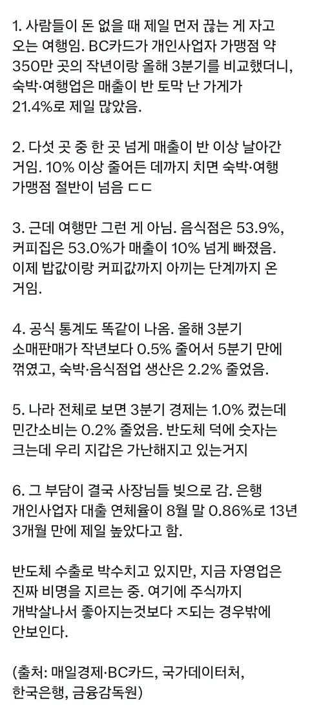

실물경제 통계 근황
댓글
웰빙 시절이 있긴했는데
웰빙이 실제로 잘살아서 웰빙이 아니라 웰빙이 유행을 탄거지. 당시 신용카드 대란 국가경제 서민경제 흔들린다 고용없는 성장으로 양극화시대 내수침체 이런기사들 줄줄이 나오던시기임.
개돼지들이 나라 망치는 중ㅋㅋㅋ
경제 찢어지는 줄도 모르고 박수 짝짝 좋아함
이새낀 진짜네 ㅋㅋ
1번, 2번은 좀 요즘 국내가느니 일본가지 가 많아서 개인가맹기준이라 일반화하기 무리고 음식점은 문닫는데 많더라
대학가 술집 슬슬 없어지는것도 많고 외식은 확실히 많이 줄어 든듯
금리 또 올랐던데..
하도 등쳐먹고 바가지 씌우니 내 돈 내고 기분 더러워지는 꼴이라 국내 여행 잘 안 감.
앞으로 더 심해질거임. 누구의 잘잘못을 떠나서 양극화가 세계적 트렌드라..
언제쯤 좋아지냐
앞으론 더 나빠짐. 대부분의 인간이 쓸모없어질것이기때문..
20ㅡ30대가 여가생활에 지출액 비중이 높은데 취업이 어려우니..
자산이 부동산에 몰빵된 이상 실물경제는 좋아질수가 없을듯
잃어버린 30년 오냐
자양업이 기형적으로 많은데, 자영업 잘된다는 기사가 나온적이있긴한가
주변 자영업자들 다 비명 지르는중
10년넘게 장사 잘하던데도
올해가 제일 힘들다 이러던데
힘들다는말 반쯤 걸러들어도
좀 많이 들리더라
잘되는데는 잘되던데 개나소나 자영업자 한다는말이 맞긴해
미분양이랑 자영업자 상권들 무너지는게 최악의 경우라고 항상 배웠는데
몇년전부터 사람많이 지나다니는길에 임대 현수막 많이 붙어있는곳들 많았음
GDP가 어디를 앞질렀다 어느국가를 이겼다 그러던데
실제로 그 나라 가보면 번화가쪽 분위기부터 차원다름
돈이 없으니까 돈을 벌어보려고 부동산이나 주식이나 빚져서 해본건데 그게 잘 안되고있으니 분노 지수가 더 높아질듯
??? : 이글 내리시죠 태평성대 입니다
이럴땐 가성비상품 장사를 해야할타이밍인데
다이소나 예전에 대패삼겹살1900원! 이런거나
5천원 잔치국수,우동 이런거...
근데 경기 너무어려워 저런것도 잘되기힘듬 ㅠㅠ
해외여행늘은거아냐?
아예안감 or 갈거면 더 가성비있는곳으로 간다
킹무원의 시대가 온다
정보) 금리 내렸다고 실물경제가 좋아진 적도 없었다. 부동산만 올랐다.
금리 내려야 경제가 좋아진다는 개새끼들이 범인.
건설업늘면 지표 뻥티기 되거덩 ㅋㅋ
올해는 진짜 정말 역대급이었고 내년은 더할거임
imf보다 더하다는게 진짜임
못해서 도태되는건 원래 있었고
잘하는데도 망하거나 쪼그라드는중임
직원자르고 있고 채용 못함
실업률이 왜이렇게 높겠음??
진짜 간신히 유지만하는거임
업장 20퍼 매출 반토막이 도태라는 새끼들은
경제관념이 어디까지 좆박은건지 감도안옴
어허 태평성대 ^^
저녁 7시에 부평지하상가 1/3정도가 문닫혀 있던데
곧 여기도 망할듯
실물지원금을 뿌려라~
해외 가잖아
대출 얼마 없는거 일부러 냄겨놓은것도 있지만 이번에 갱신 하는데 시바 1.5% 올라가길래 은행직원한테 이게 맞냐고 물어봄ㅋㅋㅋ 대출 많은 애들 힘내라 경기도 안 조은데 힘든 양빵 맞겠네ㅠ
gdp딸딸이치는 병신 저능아새끼들 볼때마다 웃기긴해ㅋㅋ 지가 벌었나 삼하가 다 벌고 그마저도 영원하지못할건데
예전에 버티면 산다였는데 이젠 버텨도 못살거 같다...
자영업이 다 잘벌려봤자 내수끼리 돌고도는거 아님? 결국 제조업이랑 금융이 해외에서 돈을 끌어와야지
근데 내가 지금 대충 30살 먹었는데
30년내내 경제좋다는 말 들어본 적 없음
맨날 힘들고 불황이래
논리적으로 불황이 있으면 호황도 있어야 하는 거 아니냐